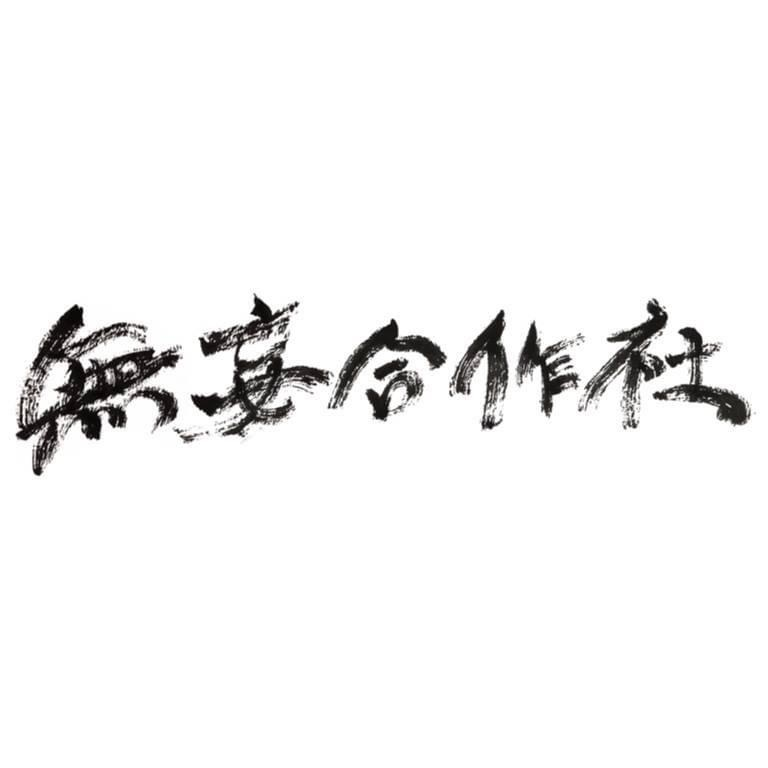
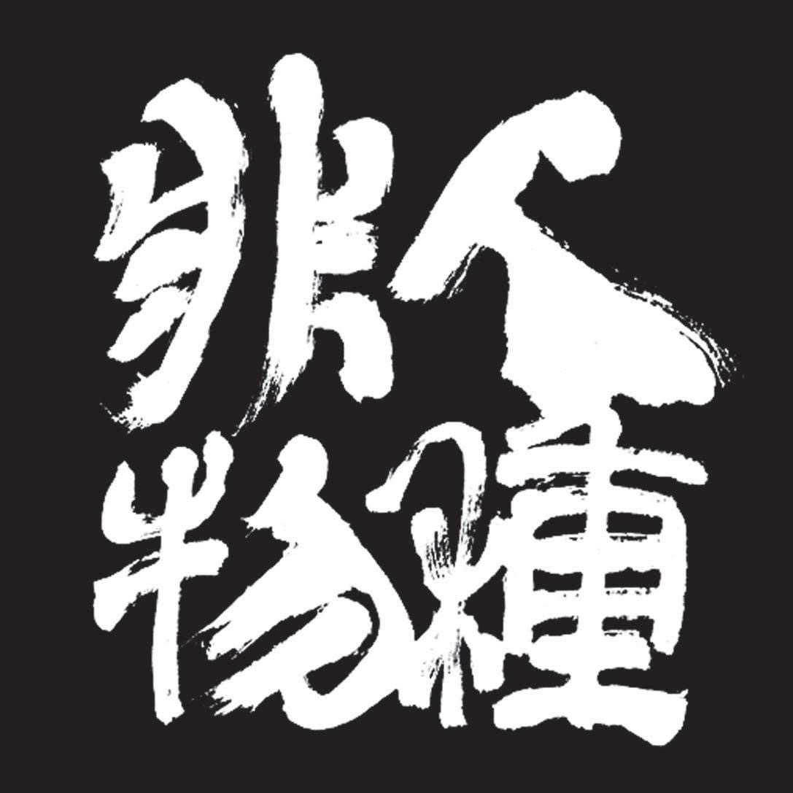

海豚刑警
大家注意==！！哈皮^^~２０１７屁團誕生(⁎⁍̴̛ᴗ⁍̴̛⁎)~☆,,*‧‧﹏海豚刑事總部正式發佈出道處女秀新聞稿@@==！！！主幹道由一把電吉他與一把電電吉他先行拿下==！！支流配置==！一些豚豚平常就會拿來噗累噗累ㄉ玩具聲響，，最後再加上淑芬雙馬尾ㄉ交叉怒吼旋轉跳躍華麗組成@@..朗朗上口ㄉ旋律==！了無新意ㄉ和弦==！曲風多變==！歌詞偏不流俗==！狗年初加入ㄌ彈指之間御用旋律線夢想導師aka金發把拔抖指引~與擔任待引爆抖哈姆太郎「咚咚」角色aka進擊抖鼓手寶珠，在這ㄍ壞噗噗(Bad poo poo)抖世界，揪讓婐悶一起~~!!~!!!~陰蒂Rock一夏芭٩(˃̶͈̀௰˂̶͈́)و！！！
倒車入庫
來自台北六張犁，車庫龐克樂隊。站在社會的陰暗角落，充滿莫名的歇斯底里與厭世感，以自己狹隘卻獨道的視野觀察眼前所看到的平常事物，「交流道旁的檳榔攤」、「朋友的朋友自殺前的日記」、「今天月亮好大」、「啊... 這個路燈壞了」、「燙傷藥膏的廣告」這些生活不起眼的狗屁小事，在心中激起莫名的波瀾。不在乎社會如何變化，不在乎黑夜過去迎來的白晝或末日。
怕胖團
2007年在臺中有兩位對音樂充滿著夢想的學生（閃亮、WeeMan）一起組成一組兩人音樂團體，在想該叫什麼團名的時候，決定以POP PUNK的諧音而取名怕胖團。

無妄合作社
由四個不事生產的懶人組成的樂團，成立以來在台北、基隆與台東等地進行創作，音樂受啟發自香菸焦油、林間野味與都市廢氣。易經：「無妄之疾，勿藥有喜」，突然得了死不了的病，不吃藥就會痊癒。對於種種欲加諸承擔的文明，我們不願戒斷與根治。

I Mean US
2015年底成立於台北，以Dream Pop為基底，曲風雜揉Post Rock,Psychedelic Rock,Shoegaze及Classical等元素。

老破麻
因為生活就像被強暴，要是躲不開你只能學會享受。所以享受著生活強暴的你我他，我們都是人生中的老破麻。"你可以嘲笑我們的團名，但是不要忘記那也是為了逗你開心。"
透明雜誌
透明雜誌（TOUMING MAGAZINE）是來自台灣台北的獨立樂團。成立於2006年一月
晨曦光廊
2008年4月9號的一場校園成發，意外湊成了『晨曦光廊』這個組合，因貝斯手-阿吉的邀請，便與吉他手-昶煬和鼓手-許花臨時組成了晨曦光廊（連團名都是臨時取的），這支受日本樂團envy影響的樂團原本打算只做一次性的演出，沒想到在表演完後意外獲得廣大迴響，接著受邀至台南LiveHouse-TCRC演出，三人自此展開了『晨曦光廊』的奇幻旅程。

非人物種
非人物種看似胡鬧的外表下，其實藏著許多實際的觀點。 不管是創作、活動、觀念，還是大環境，甚至深耕到文化，他們都可以提出中肯、全面的看法，想必是一路走來的認真體會，才有如此精闢見解。
餵飽豬
餵飽豬來自溫泉（溫柔）鄉礁溪成立於2012年的佛光大學熱音社出了學校後可能與你我一樣，曾經有著烏托邦嬉皮的幻想， 但無奈關心政治、父母健在、積欠債務、人無大志， 現在只能好好當一名龐克。
餵飽豬
餵飽豬來自溫泉（溫柔）鄉礁溪成立於2012年的佛光大學熱音社出了學校後可能與你我一樣，曾經有著烏托邦嬉皮的幻想， 但無奈關心政治、父母健在、積欠債務、人無大志， 現在只能好好當一名龐克。


{kind=link}
{kind=link}
{kind=link}
{kind=link}
{kind=link}
{kind=link}
{kind=link}